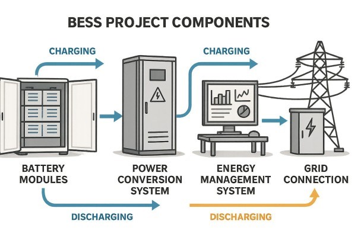
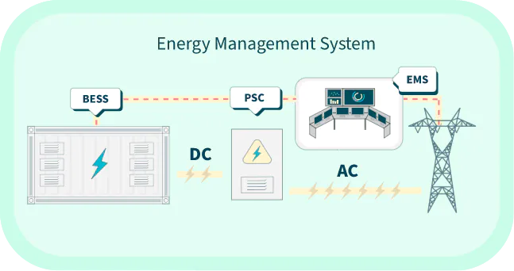
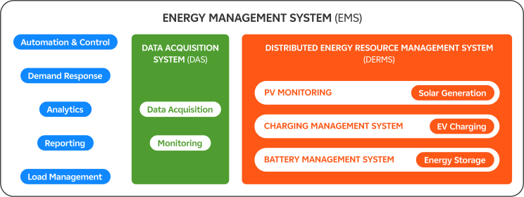
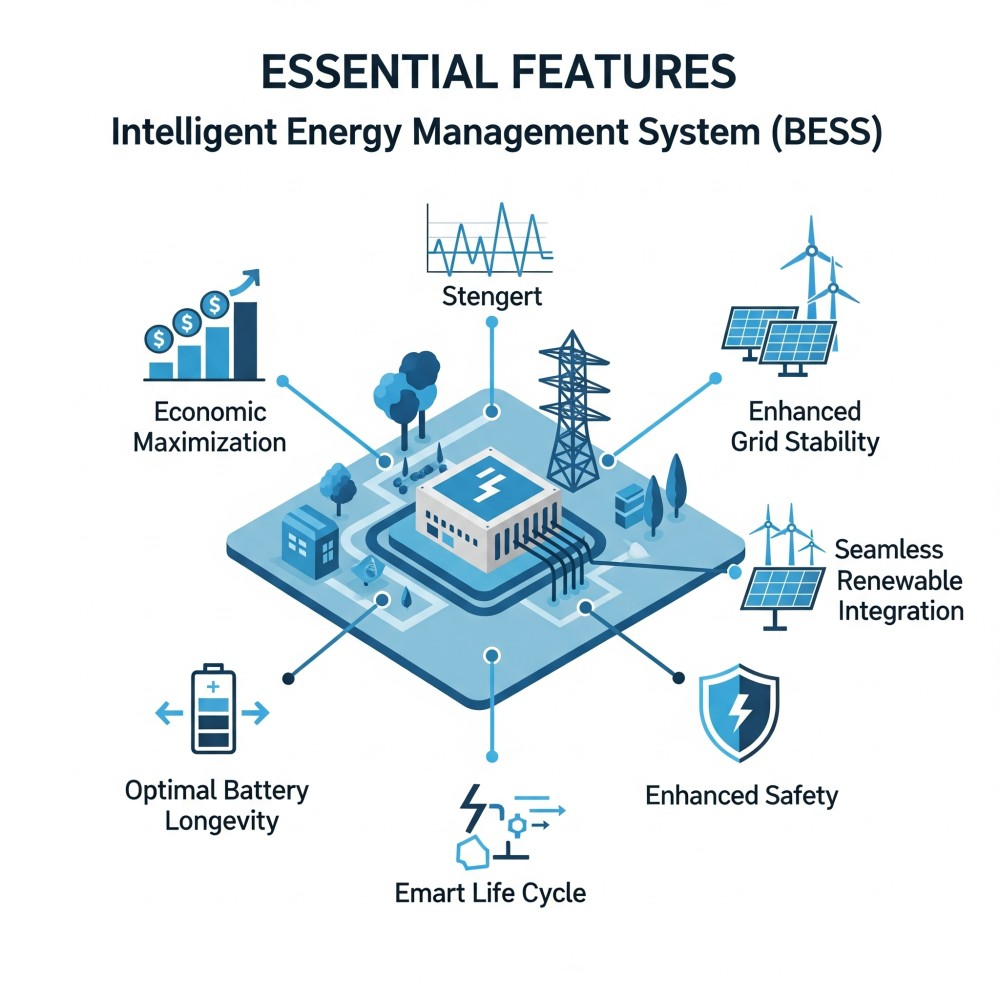
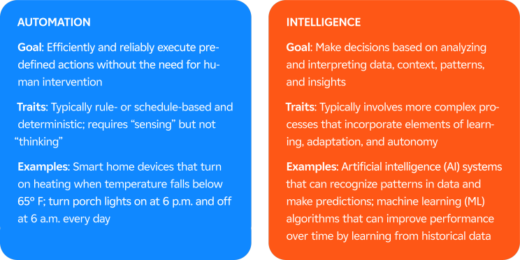
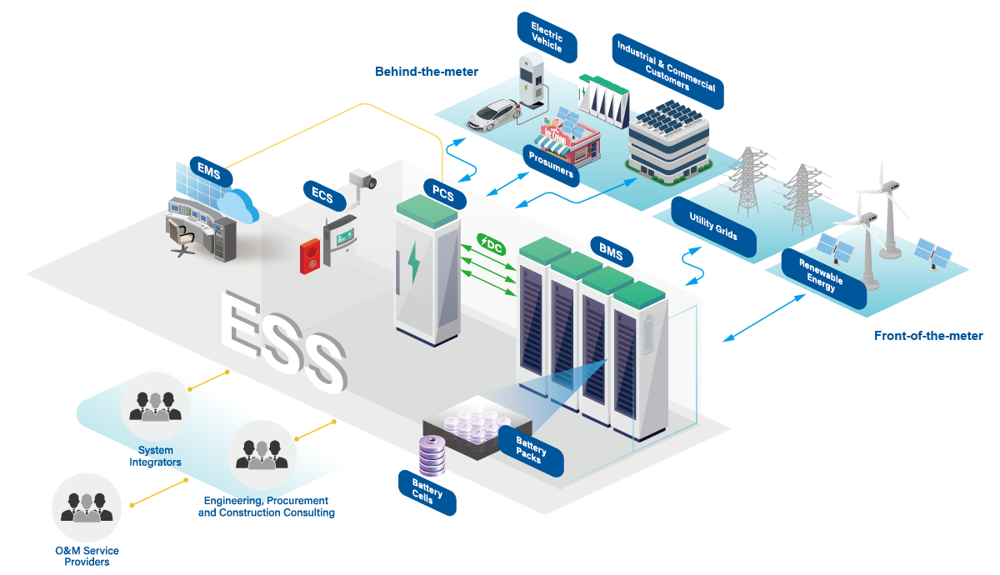
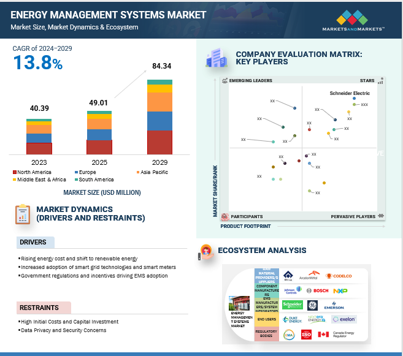

The global push for renewable energy has made Battery Energy Storage Systems (BESS) a cornerstone of the modern power grid. Yet, a BESS is far more than just a collection of batteries. Its true intelligence and value lie in the Energy Management System (EMS)—the sophisticated software and hardware that acts as the brain, orchestrating every action to ensure efficiency, safety, and profitability.
This detailed exploration will unpack the crucial role of the BESS EMS, examining its significant advantages, its inherent drawbacks, and the future trends shaping its development.
How a BESS EMS Works
A BESS EMS is a dynamic control system that integrates data from a variety of sources to make real-time, optimized decisions about when and how to operate the battery. It doesn’t just blindly follow a schedule; it's a living system that continuously learns and adapts to changing conditions.

Key Data Sources and Functional Interplay:
- Battery Management System (BMS): The BMS is the EMS’s closest partner. It provides critical, cell-level data on the State of Charge (SoC), State of Health (SoH), voltage, current, and temperature. The EMS uses this information to operate the batteries within safe and optimal limits, preventing over-stressing, which can degrade the battery's performance and shorten its lifespan.
- Power Conversion System (PCS): The PCS is the physical link between the batteries and the grid. The EMS sends commands to the PCS to convert the battery's DC power into AC power for the grid, or to convert AC grid power into DC for charging the batteries. This seamless control is essential for providing fast-response grid services.
- Grid and Market Signals: The EMS constantly monitors grid frequency, voltage, and real-time electricity prices from energy markets. It can respond to price signals, enabling the BESS to act as a valuable market participant and generate revenue through arbitrage.
- Weather and Forecasts: For hybrid systems, the EMS integrates weather forecasts to predict renewable energy generation from solar or wind. This allows it to intelligently plan charging cycles, ensuring a more stable and predictable power output. This is a critical function for "firming" intermittent renewable power.

Core EMS Architecture:
- Data Acquisition Layer: Real-time collection of system parameters, grid conditions, market prices, and weather data
- Analytics Engine: Advanced algorithms processing collected data to generate optimal control strategies
- Control Interface: Direct communication with BMS, PCS, and other system components to implement decisions
- Communication Layer: Integration with external systems including SCADA, grid operators, and market platforms
Why an Intelligent EMS is Essential?
An advanced EMS is the key to unlocking the full potential of a BESS. Its capabilities go beyond simple energy storage, offering a wide array of benefits that enhance both the system's economic performance and its contribution to the wider energy grid.

- Economic Maximization: The EMS is an economic optimization tool. It uses complex algorithms to identify and act on the most profitable opportunities. This includes peak shaving (discharging during high-cost peak hours), load shifting (charging when electricity is cheap), and participating in ancillary services like frequency regulation, where it can be compensated for providing grid stability. By doing this, it generates multiple revenue streams and significantly improves the BESS's Return on Investment (ROI).
- Enhanced Grid Stability and Reliability: The EMS enables the BESS to act as a rapid-response resource for the grid. It can inject or absorb power in milliseconds to correct minor frequency and voltage fluctuations, a critical service for modern grids with increasing amounts of variable renewable energy. This ability makes the entire power system more resilient and less prone to blackouts.
- Optimal Battery Longevity: The most expensive part of a BESS is the battery itself. The EMS, working closely with the BMS, ensures the batteries are operated within their ideal thermal and electrical parameters. It prevents deep cycling, overcharging, and exposure to extreme temperatures, which helps to slow down battery degradation and extend the system’s lifespan.
- Seamless Renewable Integration: For hybrid systems, the EMS acts as a bridge between the intermittent renewable source and the grid. It can store excess solar or wind energy and release it later, effectively "firming" the output and making renewable power more predictable and dispatchable. This feature is vital for meeting renewable portfolio standards and reducing the reliance on fossil fuels.
- Enhanced Safety: The EMS continuously monitors all system parameters. If it detects an anomaly—such as an over-temperature condition or a fault in a battery module—it can trigger immediate safety protocols, like shutting down the system or isolating the faulty component. This proactive approach prevents catastrophic failures like thermal runaway, protecting both the asset and surrounding infrastructure.

The Challenges of a BESS EMS
Despite its benefits, the BESS EMS is not without its challenges. These drawbacks are important considerations for anyone looking to deploy a BESS, as they impact project cost, complexity, and operational risk.
- High Complexity and Cost: Developing and deploying a sophisticated EMS is a major undertaking. It requires complex software engineering, advanced control algorithms, and significant investment. This high initial cost can be a barrier to entry for smaller projects. Furthermore, the complexity can lead to higher maintenance costs and a steeper learning curve for operators.
- Cybersecurity Vulnerabilities: As the EMS is a networked, software-driven system, it is a prime target for cyber-attacks. A compromised EMS could lead to operational disruptions, manipulation of grid functions, or physical damage to the BESS. Robust cybersecurity measures—such as secure communication protocols, firewalls, and continuous monitoring—are essential but add another layer of cost and complexity. The industry is still developing comprehensive standards to address these threats.
- Interoperability and Standardization Issues: The lack of industry-wide standards for communication protocols between different BESS components (inverters, batteries, EMS) can create significant integration headaches. Combining equipment from multiple vendors can lead to compatibility issues, increasing the time and effort required for commissioning and troubleshooting.
- Regulatory and Market Limitations: The full value of an EMS is realized when it can participate in multiple markets simultaneously. However, some regional markets and regulatory frameworks may not support this, limiting the BESS's ability to generate revenue and justify its cost. In some cases, a BESS may be restricted to providing a single service, even if its EMS is technically capable of more.
- Algorithm and Model Limitations: The performance of the EMS is highly dependent on the accuracy of its prediction models and optimization algorithms. Inaccurate forecasts for weather, market prices, or load demand can lead to suboptimal decisions, reducing the BESS's profitability and effectiveness. The system's intelligence is constrained by the quality of its inputs and the sophistication of its underlying models.
Future Trends: A New Era of AI and Autonomy
The future of the BESS EMS is evolving rapidly, driven by technological advancements that promise to make these systems even more intelligent, efficient, and cost-effective.

- Integration of AI and Machine Learning: The next generation of EMS will move beyond rules-based programming. AI and machine learning will be used to analyze historical and real-time data to forecast energy demand, predict market prices, and optimize charging and discharging cycles with unprecedented accuracy. This will not only improve economic returns but also enable predictive maintenance to prevent failures before they occur.
- Self-Healing and Autonomous Systems: Future EMS will be able to detect faults and automatically reroute power or isolate components to continue operation. They will also be designed to operate more autonomously, making complex decisions without constant human oversight, which is crucial for managing large fleets of distributed BESS.
- Enhanced Cybersecurity: As cyber threats become more sophisticated, future EMS will integrate advanced, AI-driven cybersecurity solutions. These systems will be designed for resilience, with built-in data backups and recovery solutions to ensure continuity even in the event of a breach.
- Hybrid System Optimization: The trend toward hybrid renewable energy plants (solar + BESS, wind + BESS) is accelerating. Future EMS will be designed from the ground up to optimize the combined output of these systems, maximizing renewable energy use and providing a "firm" power supply that is more reliable than standalone solar or wind.

Global Market Evolution and Regional Developments
Market Growth and Projections
The global BESS market continues to experience explosive growth, driven by renewable energy integration requirements, grid modernization needs, and declining battery costs. The market value is projected to grow from USD 8.8 billion in 2024 to USD 49.3 billion by 2032, representing a compound annual growth rate of 24.7%.
Regional Market Dynamics:
- Asia-Pacific: Leading growth driven by renewable energy integration and grid modernization, particularly in China and India
- North America: Strong growth in utility-scale applications and grid services
- Europe: Emerging market with significant policy support and regulatory frameworks

Technology Cost Trends
Declining Battery Costs: Lithium-ion battery pack prices continue to decline, reaching approximately USD 95/kWh in 2025 with projections of USD 68/kWh by 2030. These cost reductions are making BESS economically viable for a broader range of applications.
System Integration Costs: While battery costs decline, the relative importance of EMS and system integration costs increases, highlighting the value of advanced management platforms.
Conclusion
The Energy Management System is the single most critical component that transforms a BESS into a powerful, intelligent, and versatile energy asset. It is the engine of value creation, enabling a BESS to provide a wide range of grid services, maximize economic returns, and ensure safe and reliable operation.
While the challenges of complexity, cost, and cybersecurity are significant, the ongoing advancements in artificial intelligence, machine learning, and data analytics are paving the way for more intelligent, autonomous, and cost-effective EMS solutions. As the world continues its march toward a cleaner energy future, the BESS EMS will not just be a tool for managing energy; it will be a cornerstone of a more resilient, efficient, and sustainable global power grid. The future of energy storage is inextricably linked to the continued evolution and sophistication of its intelligent brain—the Energy Management System.